Animals at the Zoo
I left early today carrying a backpack containing 2 bottles of water, some chocolate biscuits,
map, and a camera. I am going to Poznan’s zoo today.
There is only one restaurant in the zoo and a store selling zoo merchandise.
However, I don’t need to ask to know that the price at the zoo will be expensive.
Whatever I need I will bring on my own. I got the map from the visitor’s center.
The bus ticket was bought previously. I also got the map that Goose drew for me.
It contains the direction from the dorm to the bus stop, which bus I need to take,
and how I get from the bus stop to the train station.
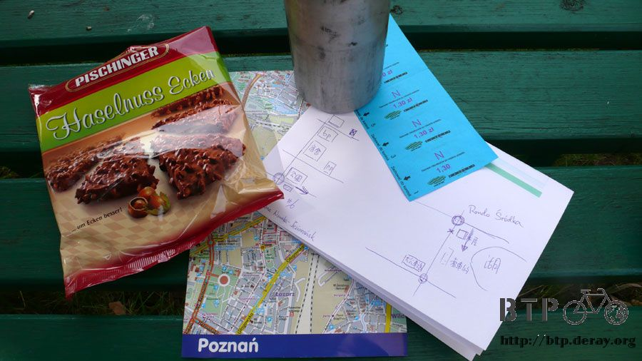
I passed by bunch of couples in love on my way walking from the dorm to the bus stop.
Even though I am by myself, I am determined to enjoy myself on this trip.
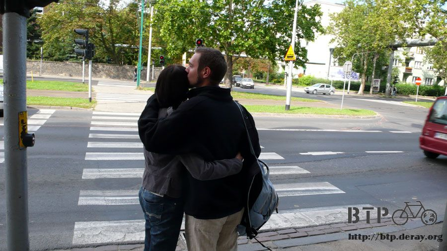
The bus stop across the street is where I will need to board the cable car.
I need to take number 6 cable car. I will pass by 6 stops, total about 24 minutes.
Therefore, I need 2 tickets with 10 minutes each for the 30 minute trip.
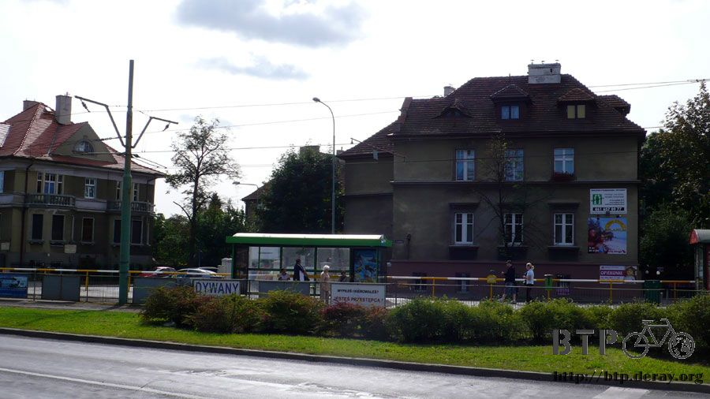
Within a few minutes, the cable car arrived.
The cars here can’t drive on the electric cable car track so there is no traffic taking the cable car.
The outside of the cable car looks very narrow, not sure how it will feel once I am inside.
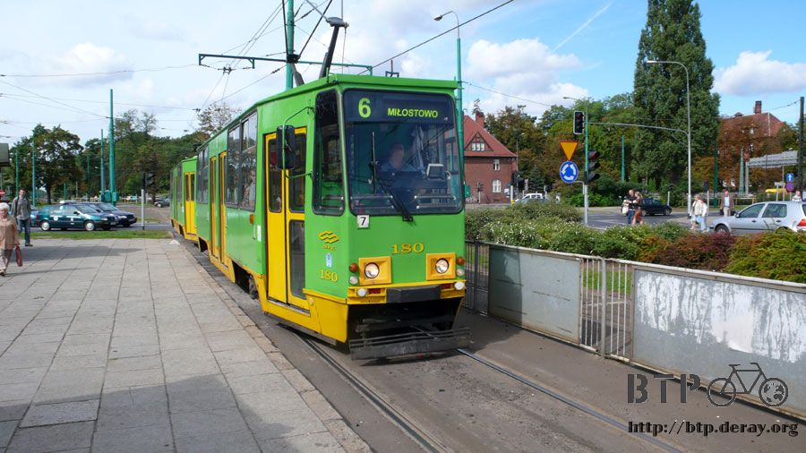
The cable car has 3 connecting sections.
Because there is no exact stopping point where the cable car stops at the station,
therefore one will need to press a button for the door to open when the cable car gets to the station.
This way, there is no unnecessary doors opening and closing.
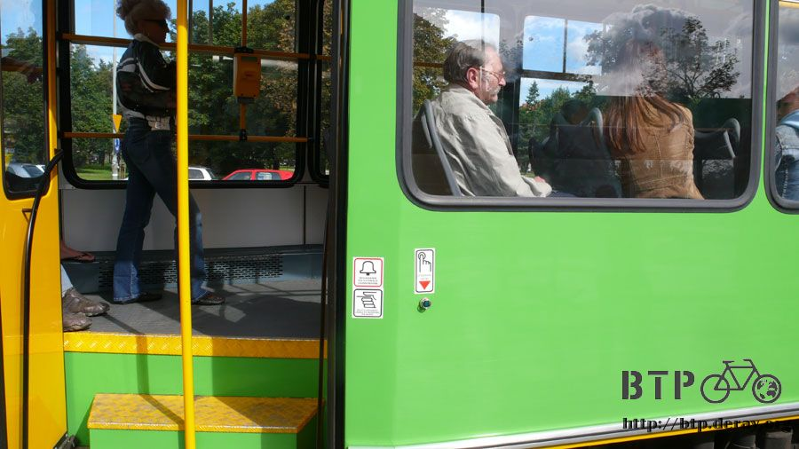
The little machine here punches the ticket. It is very simple, this machine prints a time on the ticket.
The moment the time count starts, is the time this ticket becomes in use.
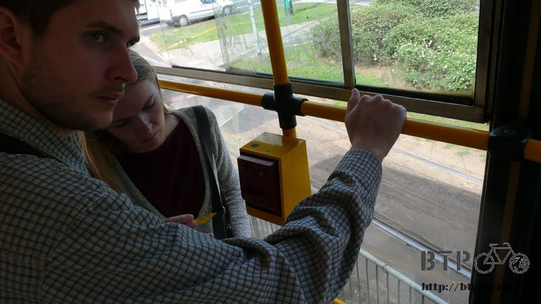
Poznan got handsome men and beautiful women.
Even though the cable car looks narrow from the outside, it is actually really spacious inside.
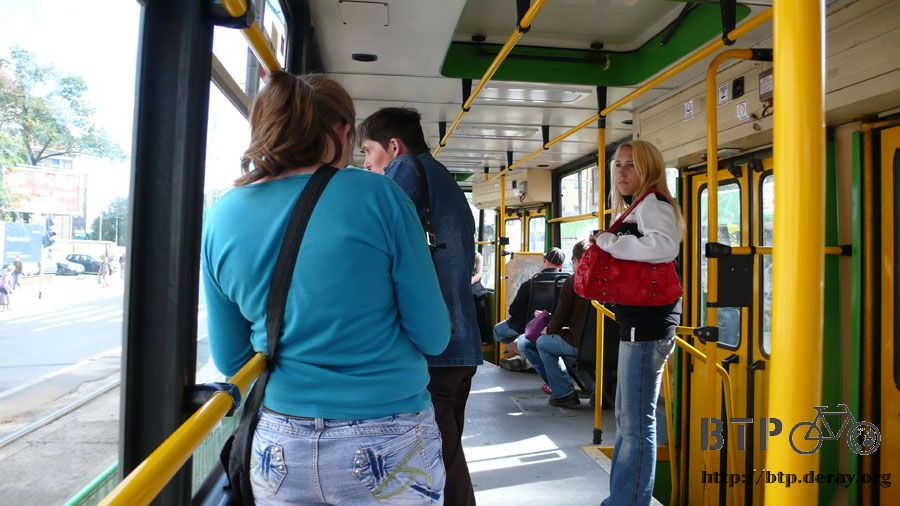
The light shines through the large windows. I am satisfied looking at the scenery while riding the cable car.
Because the cable car does not broadcast each station’s name upon arrival,
so one must be careful which stop he/she needs to get out.
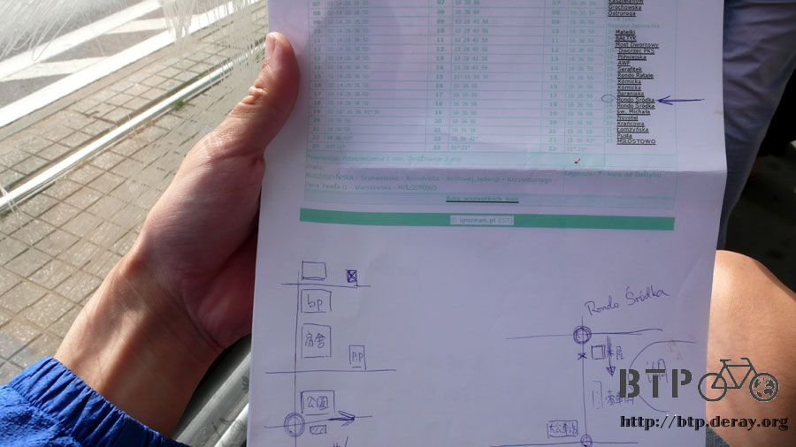
I am sitting on the chair reading the information Goose gave me.
Goose especially printed out a list with times and stops that Number 6 will make.
I need to get to the stop where the blue arrow is pointing.
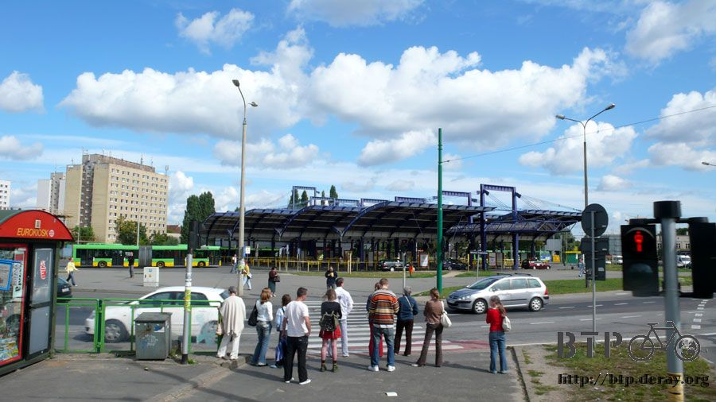
In a moment we will pass by a big bus stop followed by a right turn.
I will be getting off the cable car once it passes by this Lake District.
Then I will walk over to take the little train. This is it, the big bus stop.
All Poznan’s car probably stops here as well. Other than the big bus stops like this one, there are smaller bus stops.
Look at the T-shirt the guy sitting in front of me is wearing. By the looks of it, this is probably some Japanese anime.
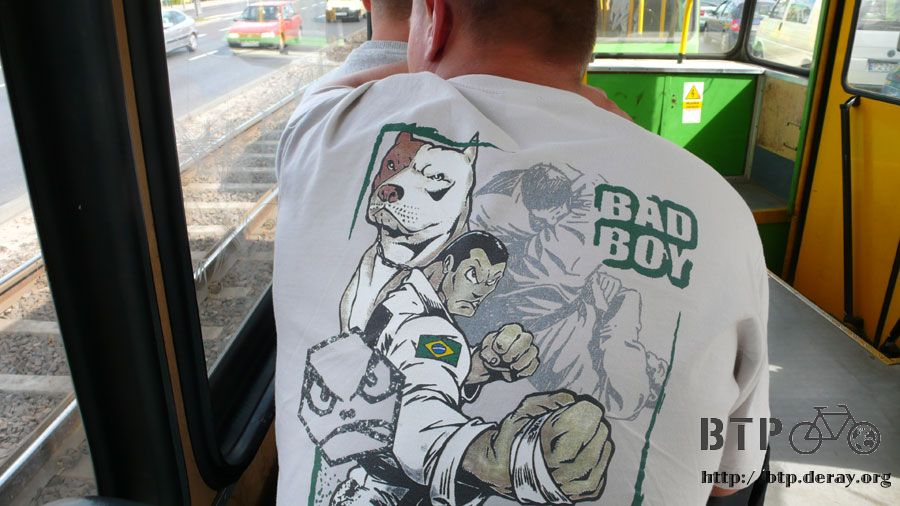
The cable car stops at every stop; I counted 12 stops silently and then ready to get off. I am here!
Once the cable car stops, I have to press the button so the door will open.
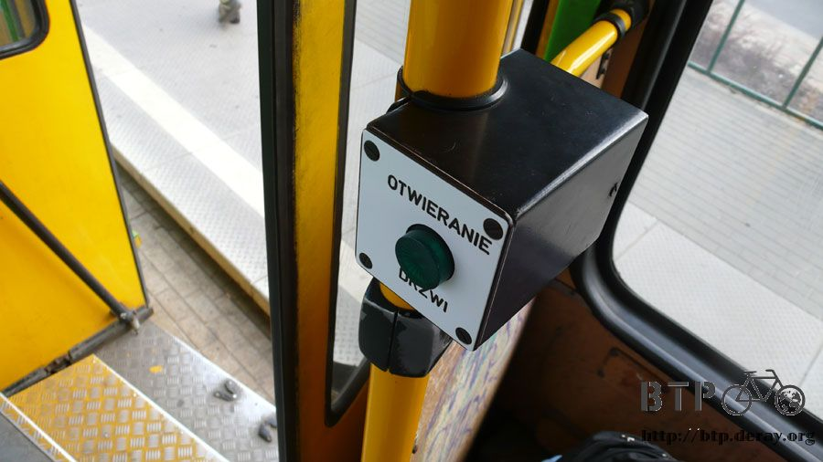
A very clear sign. It is ok even if I don’t understand the words.
Just by looking at the train picture, I know I should follow the sign.
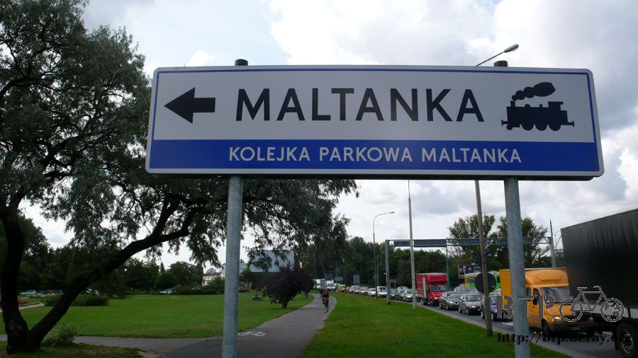
The little red roof in the front is where tickets for the train are sold.
Right when I arrived here, I heard the train’s whistle blowing, whoooo~
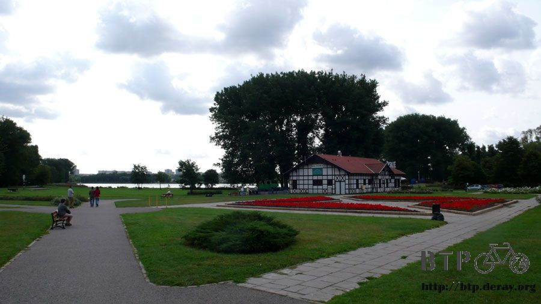
And then I saw the slowly moving train. I didn’t expect this easy to reach the train ticket station.
This means I am half way there. I just have to get the train ticket now and I will be there.
Walking to the ticket booth I was a little surprised.
Other than on the weekends, the train only runs once an hour.
Right now is 11:04am; the next train won’t come until noon.
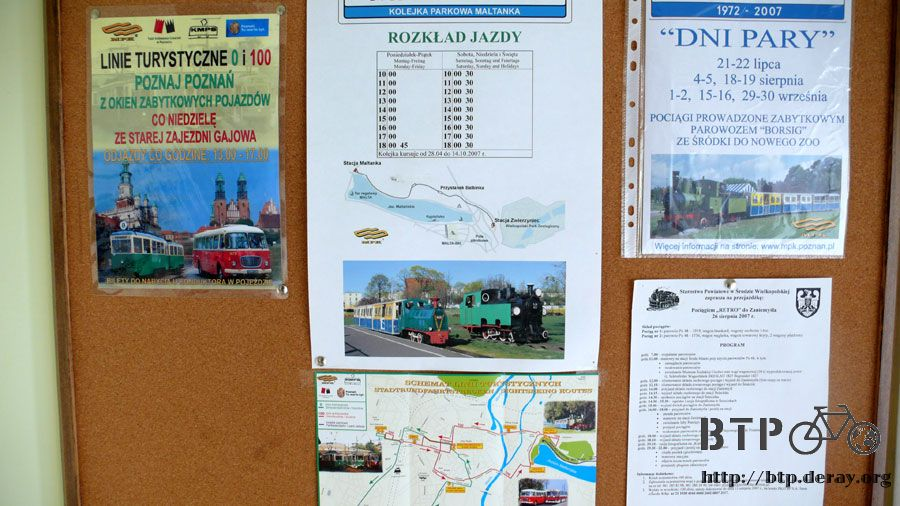
When I saw the train moving earlier, I should have run to it and ask it to wait for me.
But I laughed foolishly thinking I found the train station~!
The old man selling the ticket said since the train won’t come until noon,
he can’t sell me the ticket now. But he gave me a little guide to the train.
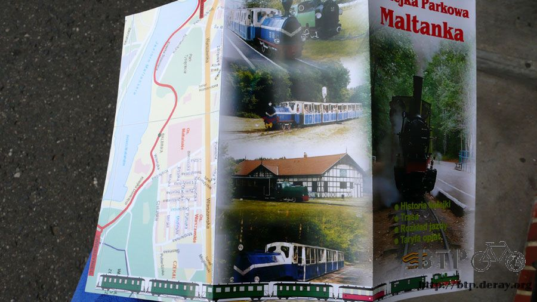
The total train rout is 3.55km (2.21miles). There are only 2 stops, one is next to the lake, and the other one is the zoo.
It looks like the zoo has been around 30 years or so.
Looking at the train’s brochure, it makes me even want to ride it.
The next train is the return train from the zoo. I will need to find something to do for the next hour.
Good thing this is very easy to do since there is a beautiful lake right here.
One hour isn’t enough for me to walk around.
The lake is very big, it is a natural lake.
There is a canal which leads water from this lake to another man-made lake.
The man-make lake is the one I saw when I had Indian food last time
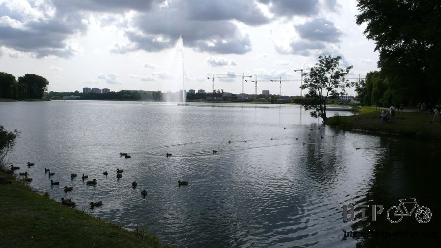
There is an extremely tall fountain on the Lake.
There aren’t a lot of clouds today, and very lucky it isn’t raining.
The whole day has been cool so I didn’t sweat from my walk.
There is a whole bunch of wild ducks next to the lake.
The ducks swim back and forth looking to see whoever feeds them better tasting foods.
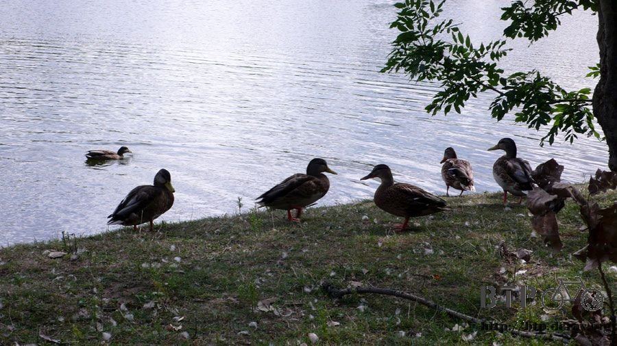
That is them, looks a lot like the duck and apple I had yesterday.
They are very skittish. If anyone gets close to them, they immediately fly into the lake.
The grass next to the lake is covered with feathers.
Anyone can feed the pigeons in the park and anyone can feed the ducks next to the lake.
Even though the ducks are scared, but for food they will get close to humans.
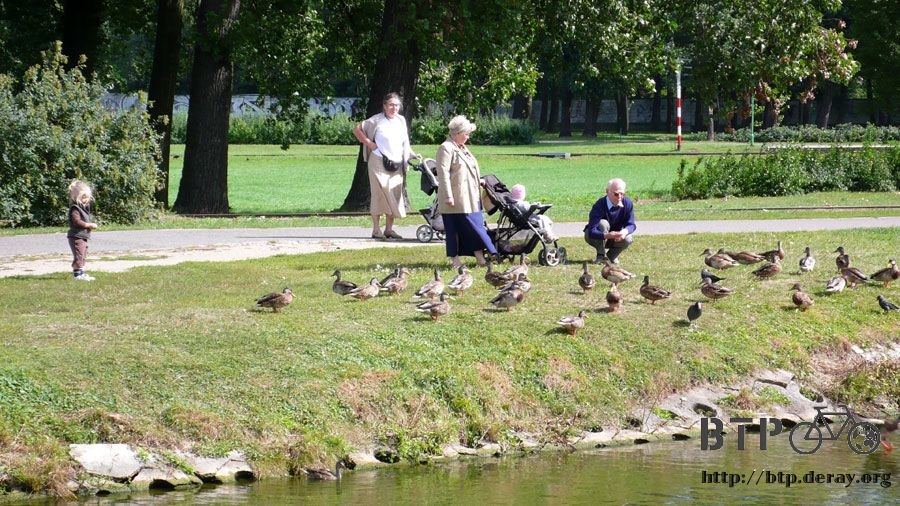
Ducks eat similar food to pigeons. By taking a loaf of bread and breaking it to parts, this can feed the ducks for awhile.
They are feeding nuts here, the ducks quickly left the old man over there and came over here.
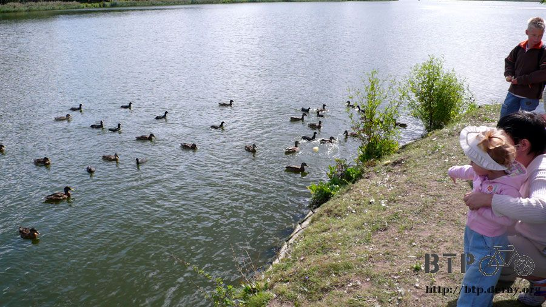
The ducks are dumb. By randomly taking some leaves and nuts and threw them on the water,
the ducks will come over and try to eat it.
Once the ducks found out they have been fooled, they will quack and then swim away.
There are tons of ducks here. The lake is greenish in color, but the water quality is pretty good.
I can see the ducks’ legs busy moving and swimming under the water.
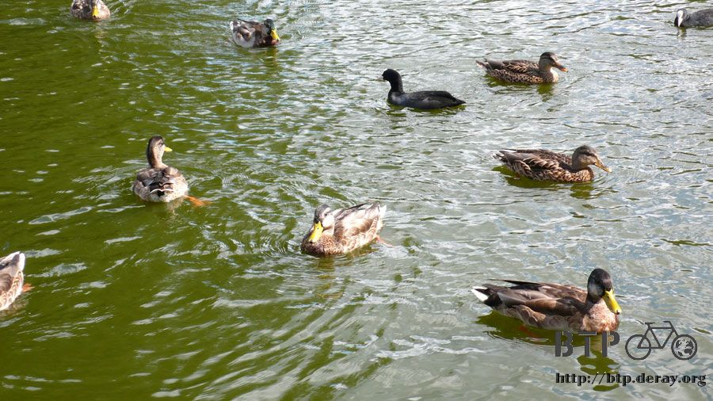
I haven’t gone to the zoo yet, and I already feel like I have seen the zoo already.
It is good I brought some snacks along, or I would get hungry after looking at the ducks for so long.
The water fountain shooting with streams half-sky high up.
There are people rowing small boat on the lake. The boat quickly moves across the lake.
There are tons of white clouds in the sky. I silently prayed there is no rain in the afternoon.
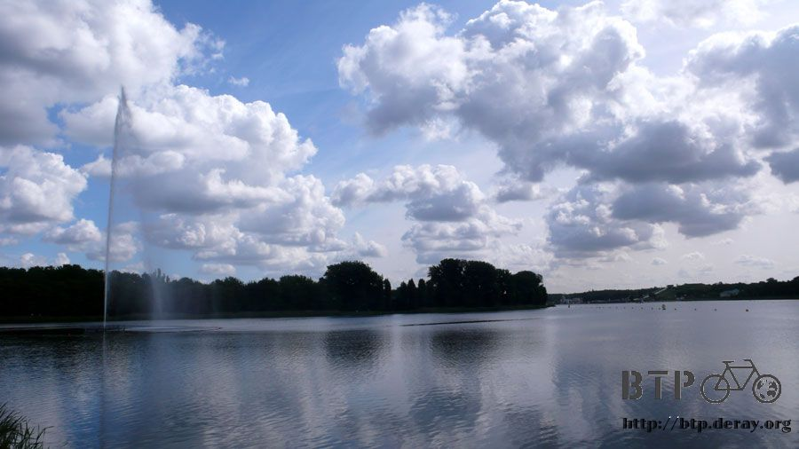
There are lots of grass growing along the lake, reed, awn glass,etc that are particular to the lake.
However, there are no plants such as duckweed and lotus plant. The surface of the lake is very clean.
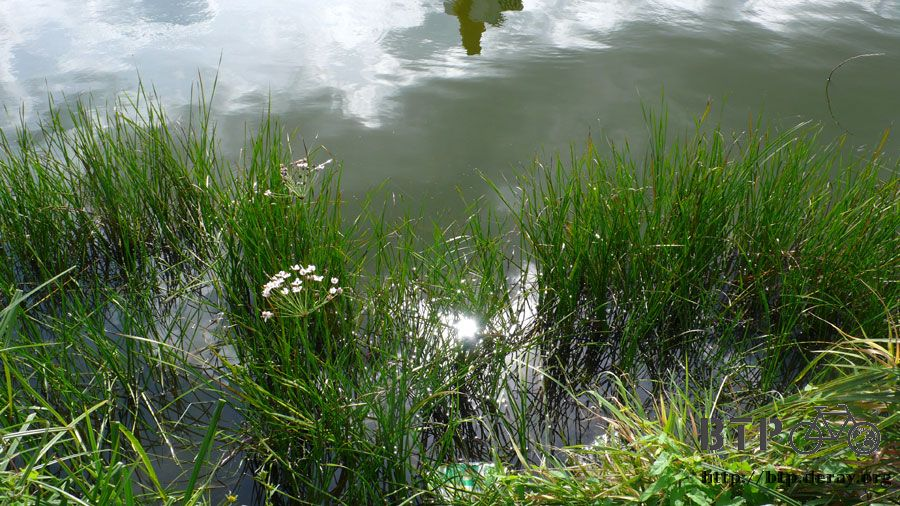
Because this lake is maintained so beautifully, the rowing competition also takes place here.
Therefore the surface of the lake must be kept clean so it wouldn’t affect the rowing competition.
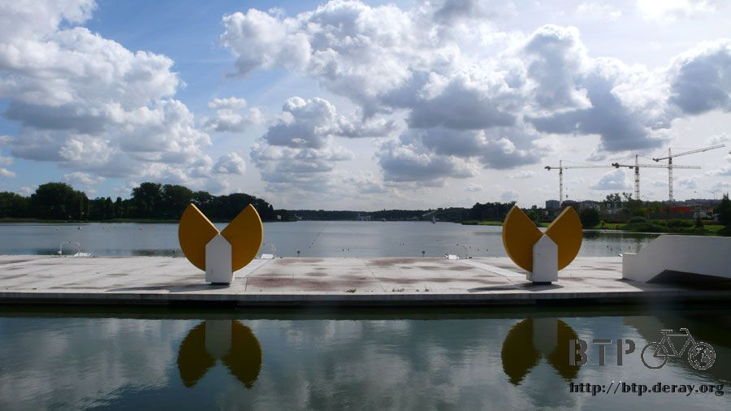
It takes at least 2 hours to walk once around the lake. It wouldn’t take as long if I was biking or roller blading.
There is a bike path, so the mom pushing the baby stroller wouldn’t collide into each other.
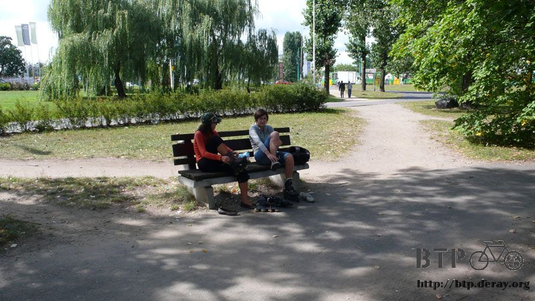
This is the pathway along the lake, very long and straight.
This one is for people walking; there is another pathway just like this one for the bikers.
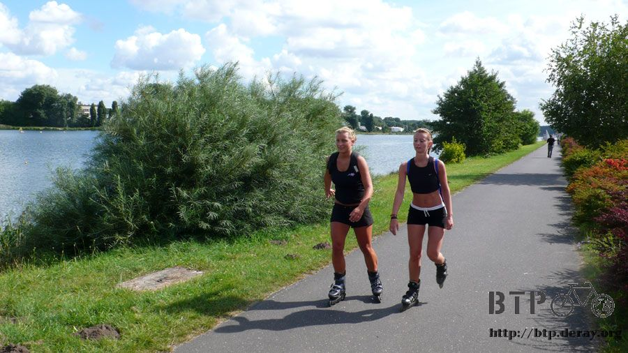
If I get tired from the walk, I can rest a bit. Looking at the beautiful lake, I am tempted to jump down and swim.
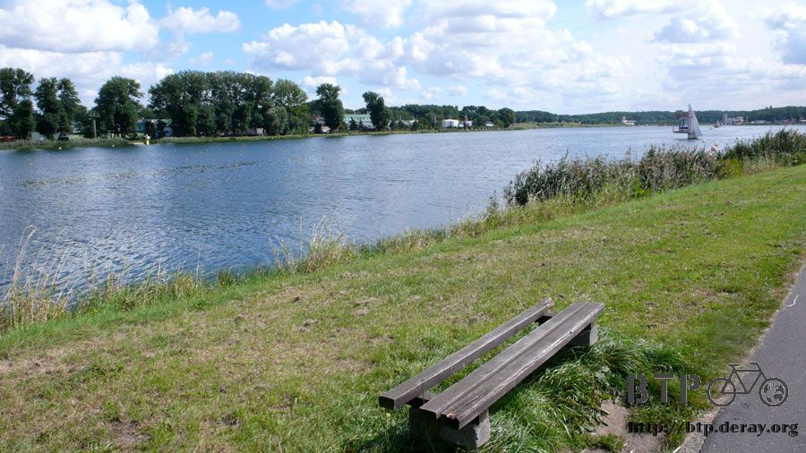
It is a wonder no one is swimming in the lake even though there is a sign says no swimming in the lake.
Europe has stricter laws.
If I am in Moscow, this lake would become a camping site with a swimming pool already.
I walked a little bit more along the lake and then I heard the whistle from the train.
The train has come back from the zoo.
I quickly run back to where the ticket booth for the train is at or I will have to wait for another hour for the train.
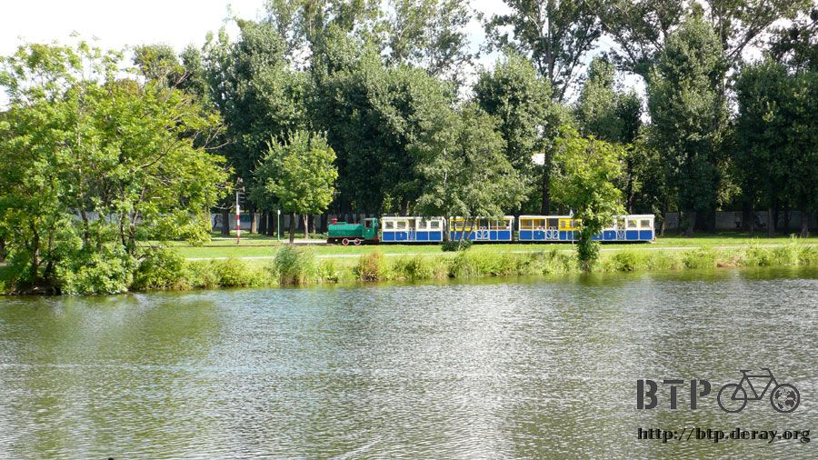
Breathing heavily from my run, I saw there is only one train running.
The mini train head is green with the compartment in blue and white color.
In just a few minutes, the train is already filled with people. I quickly run to get my ticket.

The zoo is very suitable for family to come, that is what most of the visitors are made of as well.
The parents are here with their kids or the grandparents taking the grandkids.
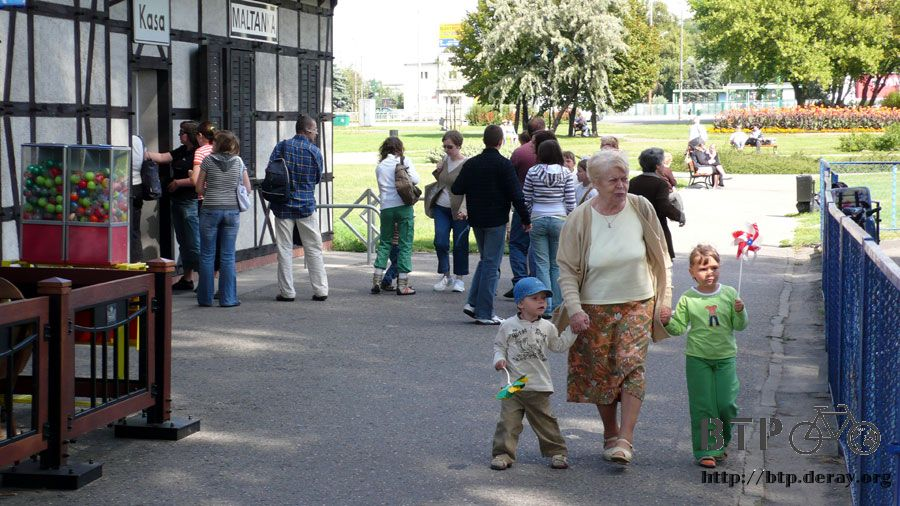
Seeing a grandmother holding hands with a grandkid, I feel very warm inside.
When I arrived here this morning the train just left so the ticket booth area was very empty.
Now there are lots of people packed here in line waiting to purchase tickets.

The ticket isn’t expensive, $4.5 Zlit for adults single trip.
I wasn’t sure if there is a discount for round trip ticket. Kids under 16 years of age the ticket is $2.5 Zlit.
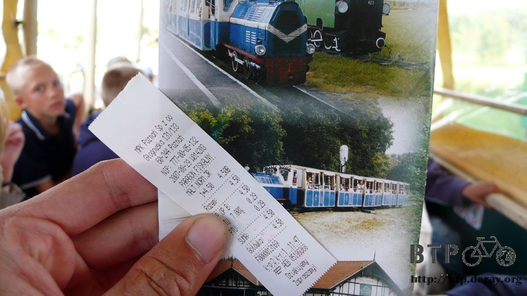
The train ticket is just a receipt, I hand the receipt to the train staff right before I board the train.
He will stamp a date on the back of the receipt. This means my ticket has been checked.
It is a little troublesome looking at the small train. The train is mostly filled already.
So I ended up finding a small seat squished next to this grandmother.
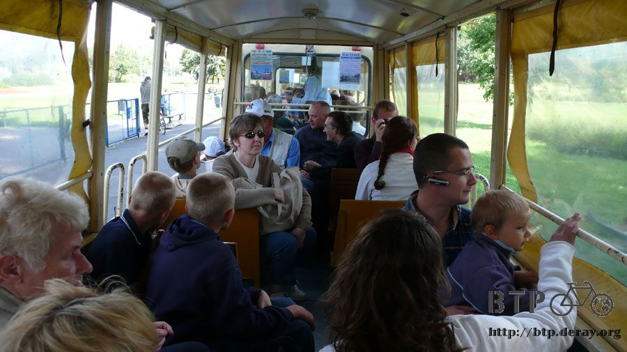
The train is a lot smaller than the cable car. The seat of the car is very small, designed for the kids.
The adults behind has a difficult time fitting into the seat.
People are standing in the front compartment of this very crowded train.
At exactly noon, the train’s whistle went off, started in the direction of the zoo.
Looking at the train’s guide in the train; on the right side is the train schedule.
Other than on the weekends, the train leaves the lake area once an hour on the full hour dot,
whereas the train leaves the zoo area once an hour at the half hour dot. The last train is at 7pm.
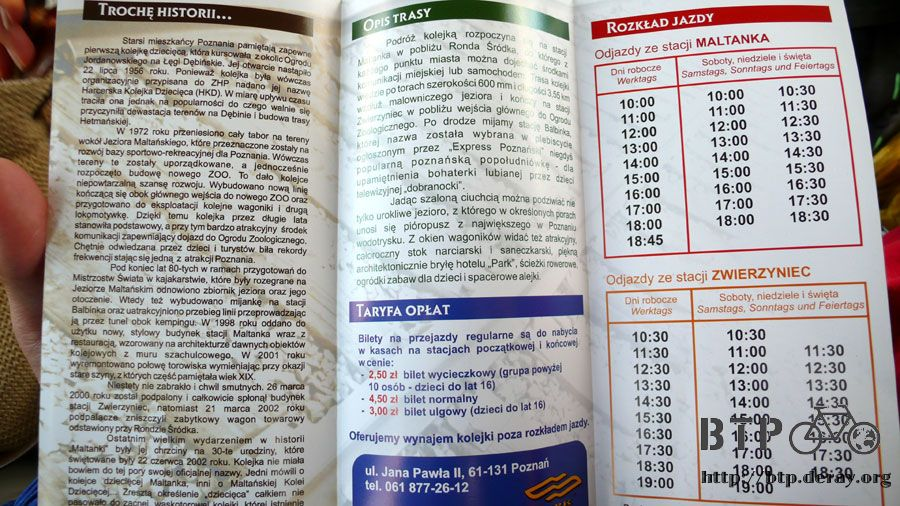
There are other ways to get to the zoo than taking the train since it is close by, such as walking, driving, or biking.
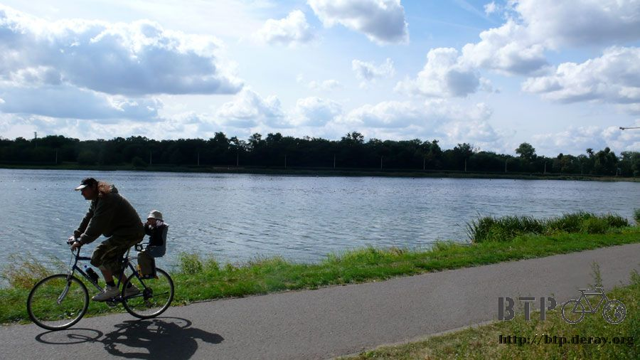
The train runs very slowly, 3.55km takes 15 minutes.
On the way to the zoo, the train kept passed by bikers.
The train got to the zoo at the same time as this biking grandfather and granddaughter pair.
Arrived at the zoo! Time to get off~
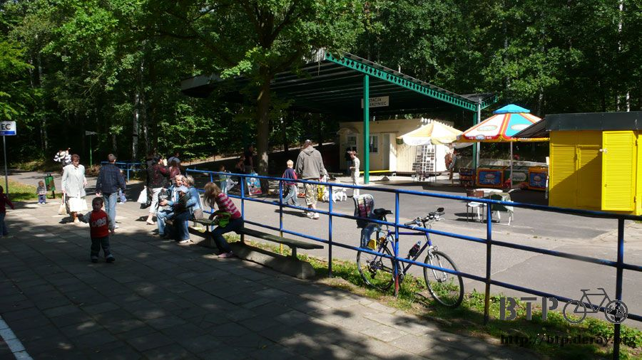
The grandfather in the picture above already locked his bike up.
The tourist here at the stop is the ones waiting for the return trip train from the zoo back to the lake.
We are already in the middle of the forest, a very small train station.
The guy in the dark green shirt is the conductor for the train.
It is very amazing even though the train head looks like a huge toy but it runs.
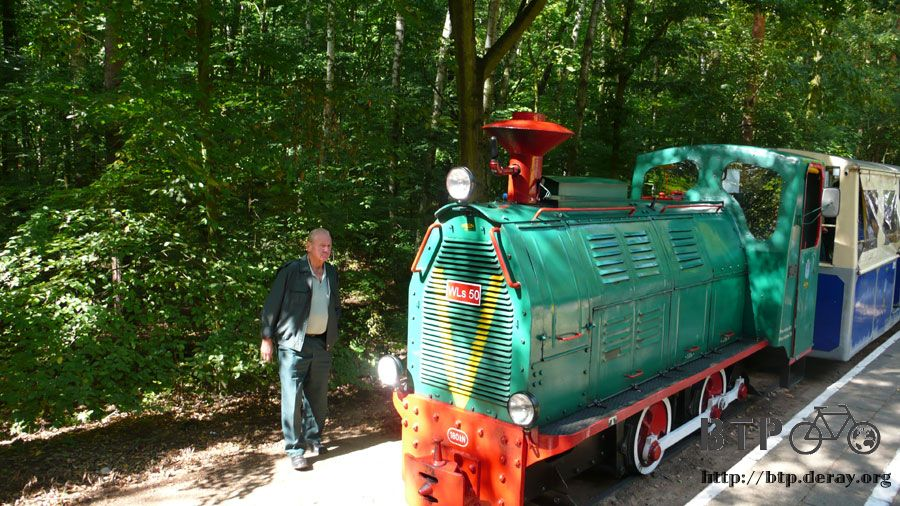
The driver seat of the train, which button do I need to be pressed so that the train will blow its whistle?
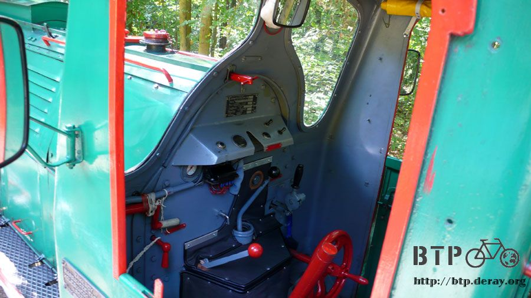
I can either follow the people who just got off the train or follow the signs for the zoo direction.
“DO ZOO” probably means This Way to the Zoo. After this hill should be the entrance to the zoo.

There are lots of people either in families or as couples visiting the zoo.
Babies also come here visit the zoo, they being pushed in their strollers.
Later when I see strollers in the zoo, they contain little sleeping babies visiting the zoo.
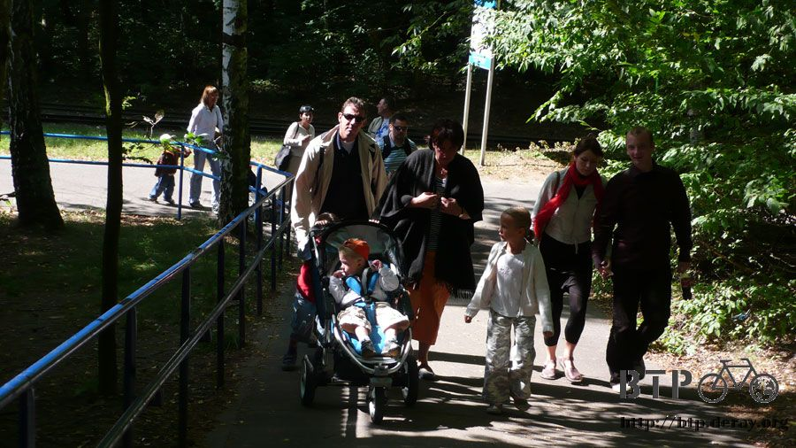
Even before I entered the zoo, I saw this little shopping area contained with lot of animal related items.
Some of them look really cute.
“Rolling on the ground back and forth, crying if you don’t get me this”
is something any kid around the world knows how to use. I saw that here as well.

The ticket booth and the entrance are together, so once I got up the hill, I have to stand in line to get the ticket.
The ticket prices for adults are $9 Zlit, half price for kids, and babies are free.
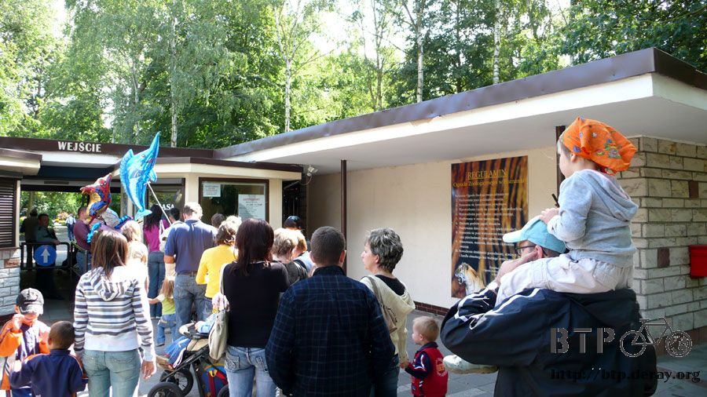
The zoo ticket is the one with the lion printed on it which says $9 Zlit.
The zoo guide is the one with the big rhinoceros on it, which cost $5 Zlit.
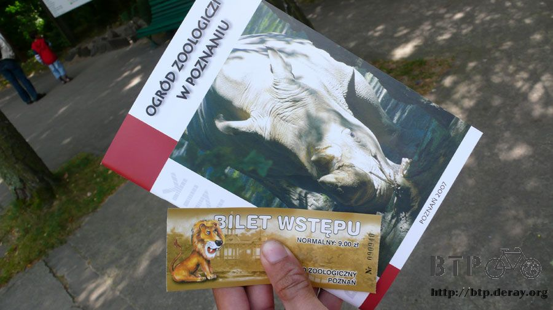
After I got the zoo guide I realized it is written in Polish. It is good the zoo guide has tons of wonderful pictures in it.
This zoo is a little bit big, so if I walk it will take awhile.
The animals have lots of room to move around in their own exhibit.
But some of the animals only have small room in their cages. This includes an eagle that needs room to fly.
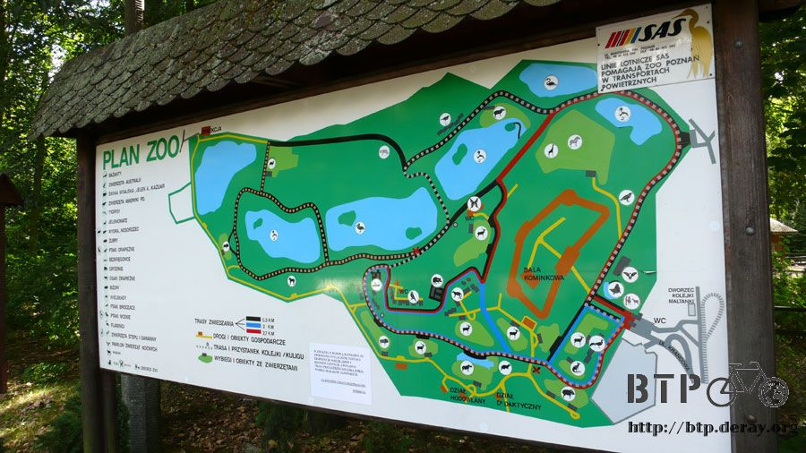
The zoo has six large lakes, lots of bird species resting by the lake.
Because the zoo is so big, there is a train service available inside the zoo.
However, I walked the whole day and didn’t see any sign of the train.
This zoo doesn’t have a lot of different animal species, but it seems like the animals all live very comfortably here.
I hope the eagle does get a new home one day.
Everyone runs toward here once they enter the zoo.
This usually means it is a petting zoo here where kids can touch the animals.
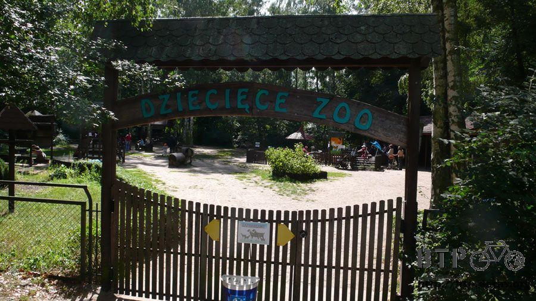
There are lots of animals made of wood here.
If Misasa sees this elephant, she probably would say, I want to ride, I want to ride.
And then sit here the whole day and not going anywhere.
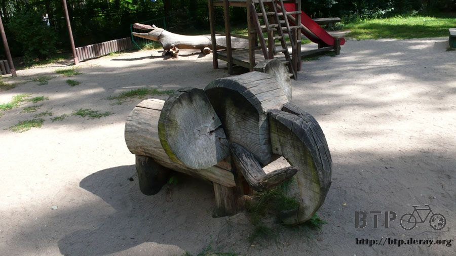
This hippo is also really cute.
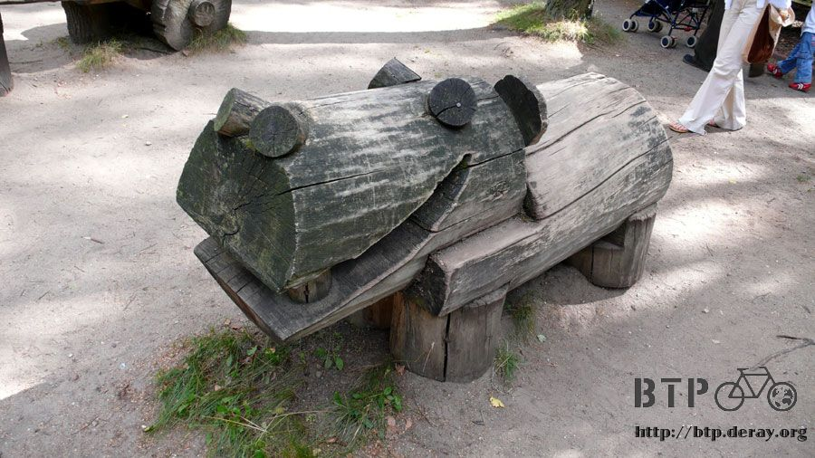
A miniature pony and wagon.
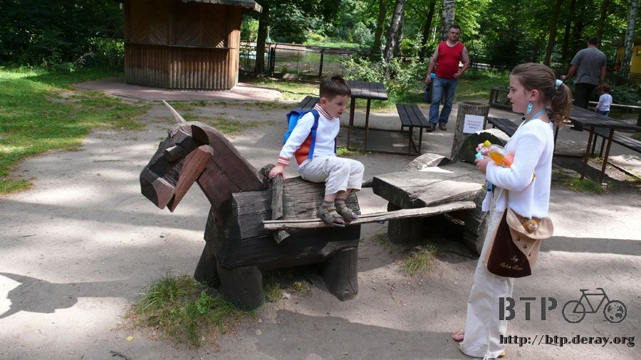
The petting zoo contained mostly of goats, the kind that has 2 horns on their head.
This is the kind of goat that looks like the Poznan’s pin badge where 2 goats have their head against each other.
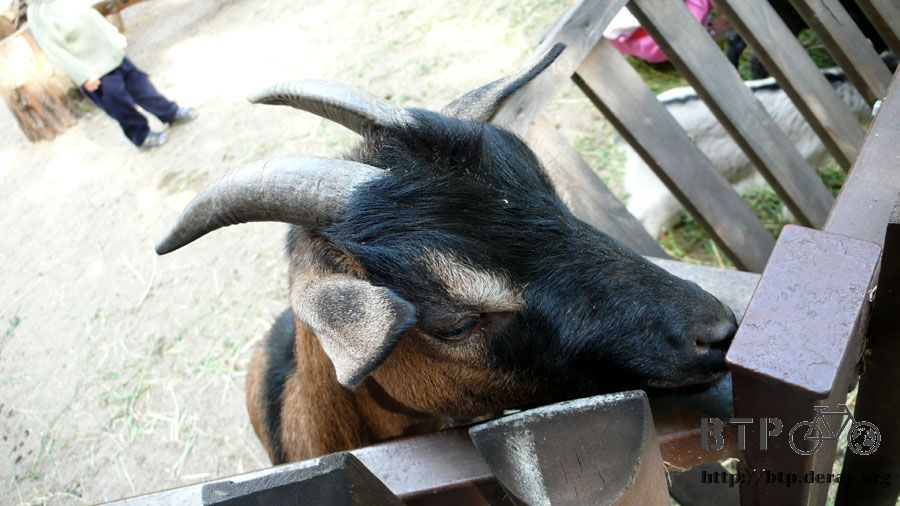

Inside the fence there are new born goats or kids and does that are pregnant.
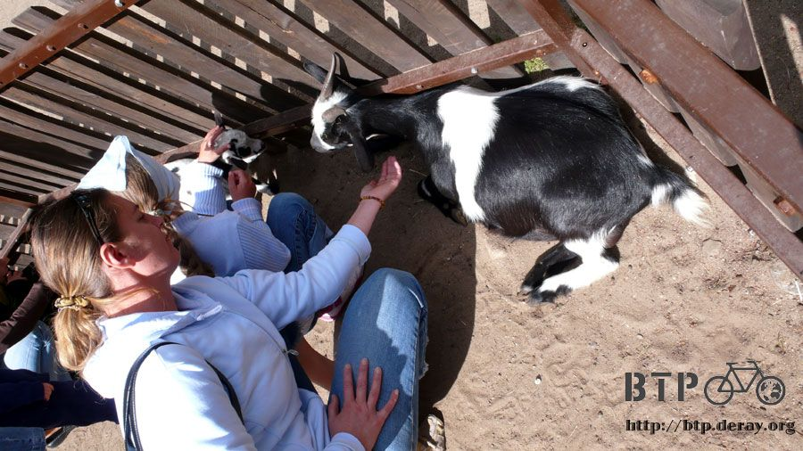
I didn’t know kids are this cute,
next time when I go eat hot pot I won’t order kids to eat anymore, giving them some chance to grow up.
Human kids and goat kids together. I laughed so hard after being here awhile.
The human kids holding grass to feed the goat kids, but once the goat kids came near the human kids,
the human kids got scared and run away.
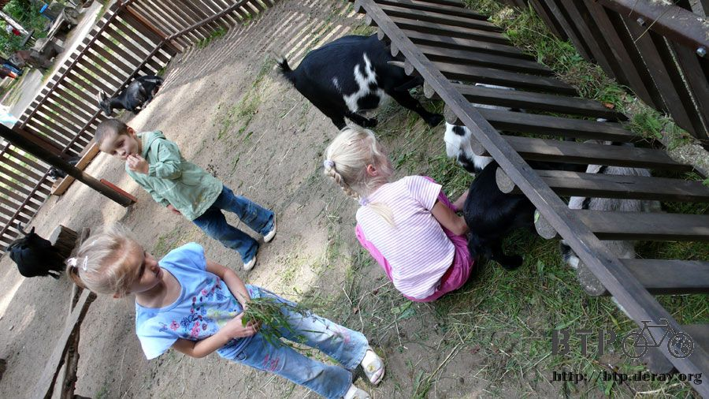
Then the goat kids runs over trying to eat the grass.
And then I see goat kids chasing human kids with the human kids trying to hide from the goat kids.
The adults don’t go rescue the human kids; rather they stand aside laughing and taking pictures.
Since it isn’t possible to be eaten by goat kids, the human kids are here to learn how to interact with animals.
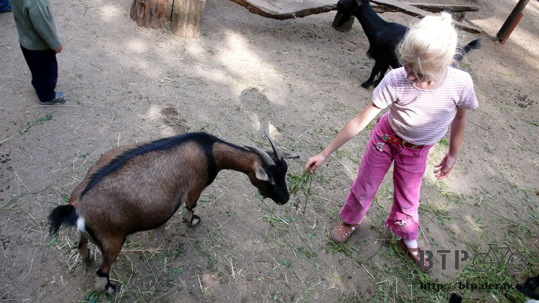
A sign about animals posted outside this fence. It shows the name, the habitat, and a picture.
I am not sure what the little caution sign with a panda in it on the upper left corner means.
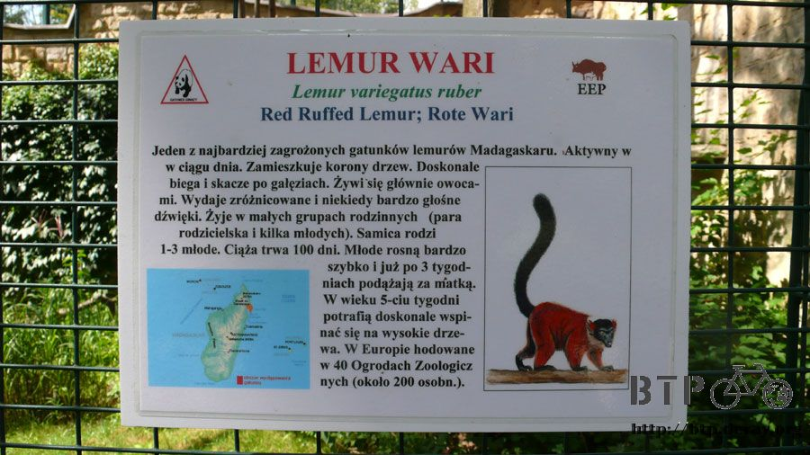
Inside the zoo the path gets confusing. Other than the major walkways, there are smaller paths in the zoo.
Looking at this sign means do not enter, this is meant for staff entering certain zoo areas for the animals.
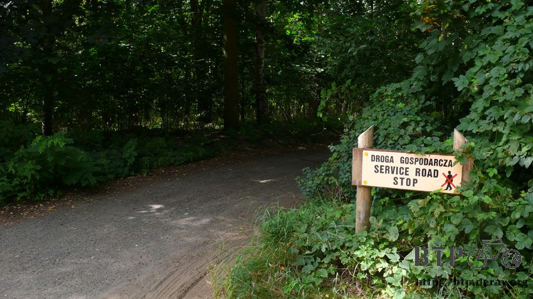
An extremely big bird gate. This reminds me of a bird cage scene in “The Persian Prince – Sand in a Moment of Time.”
This area is big; I hear animal sounds all over not sure if the sound came from inside or outside of the cage.
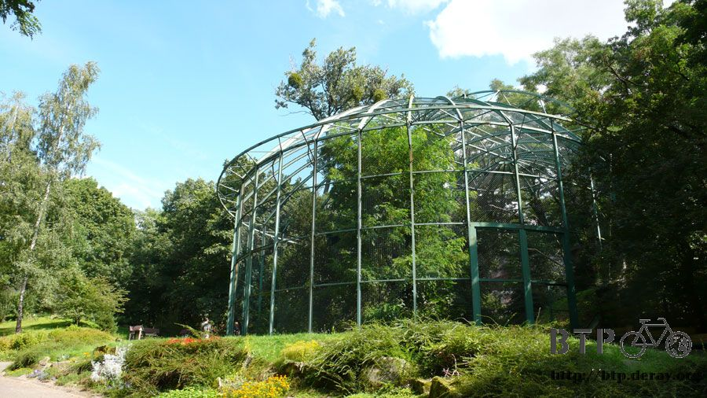
Maybe there are very many animals living here already. The area is planted with lots of greeneries.
Other than the basic fence that separate the human and the animals, the areas for the animals and humans look the same.
There are no special buildings built here, the zoo still contain the original forest look for the animal habitat.
The bird leg is already really skinny; they are probably tired from standing all the time.
When they sleep, they only stood with one leg; wouldn’t they fall over in their sleep?
The animal habitat is very open, if I didn’t see a sign posting what animals live here,
sometimes I wouldn’t see any animals at all.
I was wondering if this area is filled with trees, but I saw some ladies kept taking pictures.
Then I follow their gaze I realized there are giraffes here. The areas they live in are very spacious.
Even though it is just a zoo here, the zoo here seems very different.
When I see the zoo here I feel excited, seems like I am looking at wild animals not an icy cage holding bunch of lazy animals.
One of the six lakes, the birds all freely roams around the lakes.
The birds are free to leave in the winter time, if they want to come back is ok too.
Swans~ Tons of ducks~ Pelicans and other large birds
I feel like I am hiking in the zoo, breathing the clean fresh air in the forest, and looking at the animals became second.

The zoo sits on 116 hectares (287 acres) of land; it takes a long time to walk to see the whole zoo.
Very quickly I got separated from other visitors that came from the same train ride as I did because the size of the zoo is so big.
It is a good thing I still see other people here. If I get lost, I will just follow them.
Not sure what this sign means, stop crossing area? No picking of the plants?
Here are separated by some wood fence. Inside is a large area holding lots of tigers.
This sign sets on the edge of the exhibit. Tiger is a fierce animal.
Accidents could still happen with visitors running all around. There is a small log cabin to watch the tigers.
For safety, the visitors need to get up to the 2nd floor level, and look down to find the tiger inside the forest habitat.
There is a picture of a tiger in the log cabin with sign on each of the tiger’s body parts.
Walking closer and I saw that each note notes that the tigers’ parts are being slaughtered,
and then which part is used for which medicine.
If we don’t take care of the animals, those beautiful animals will become extinct.
Then we will only see those animals in Chinese Medicine stores.
New brush branches growing out from the side of the tree that has been cut. It becomes like this once it grows big.
Presenting sleeping child. No wonder the kids enter for free because they are sleeping from the time they enter.
I didn’t see the train, but I did see the train stop.
I sat on the bench and rest a bit. The cool breeze blowing here makes me sleepy.
The train’s route, looks like it is separated into 3 sections. How come I didn’t see the train at all
When I sat on the bench napping, I got hit by this on the head. This area contains monkeys.
If this didn’t fall from a tree, then the monkeys threw this at me.
That is them, the smelly faced monkeys. They are from Japan.
When I look closer at the picture, I see the monkey is holding a baby monkey.
Other than the wider walking path, I found lots of smaller paths that can cut across the forest.
Those paths aren’t show on the map, I was a little surprised when I found them.
A very attractive forest path, this is different from the zoo I know.
In my memory, the zoos are covered with tourist, lots of fences and exhibit buildings.
Poznana’s zoo presents a feel of greenness and peacefulness.
This stretch of green law houses deer and birds.
On the bottom left corner of the picture shows see some very low fence that isn’t very noticeable.
I wonder why those animals wouldn’t run out of the fence.
Maybe the area inside the fence is already very comfortable, similar to their natural habitat.
There is also food to eat, so there is no reason to run away. I saw a bigger deer housed here.
The sign talks about the type of deer, the one with antlers, and has spots on its body.
There are lots of species of deer here; this one is probably a mixed deer. I am feeding it some snacks.
Even though I can not read Polish, I can still visit the animals I want by looking at the signs.
The zoo has easy to understand signs posted, they use pictures rather than words.
Thus I can tell by just one look at the sign what types of animals are housed in this direction.
The map showing routes in blue or red color are suggested path for visiting the zoo,
this allows the visitors to visit more animals before having to walk too much.
The black color route is the longest visiting path; it is not possible to walk that route in less than two hours.
The only thing I didn’t get to see on this trip is the African animals.
It is just too far away. I sighed looking at the map. I don’t get tired riding my bike but I got tried from the walk.
This is the only restaurant in the zoo.
The things they sell are really simple, soda with burger, and French fries.
There is no price list, maybe the price kept going up so they got lazy trying to change the sign all the time.
Therefore they just decide not to have a price list at all.

It is good I brought a lot of water and snacks. By the time I finish it all, is time to go back and take a nap.
I rode the train back to the lake area.
Then I took cable car #6 back to the dorm, basically the route I took in reverse today.
Today is a travel blog on the zoo. If I put too many zoo animal pictures up, it will feel cold.
Thus I didn’t put too many zoo animal pictures up.
So I am putting up some pictures of beautiful girls.
The dinner today is made by Goose and Guerilla.
Guys’ cooking isn’t any shabbier than girls’ cooking.
When we were in Hsinchu, I was the one cooking and Misasa was the assistant.
The kitchen in the dorm is pretty convenient. This way whatever is made is much classier than Ramen Noodles.
Plus the fact Goose and Guerilla are both foodies, so whatever we eat can’t be anything bad.
Eating so many varieties of food from different countries,
I still feel that I prefer food cooked by Taiwanese because they are homier.
A whole plate of ribs glazed with honey, Napa cabbage stewed with chicken breast,
light, sweet, and tasty long melons, and nutritious beef soup.
I ate bowl after bowls of white rice. Home cooking is much more economical than restaurant food.
Not only I am very happy to eat it, the interesting thing about cooking is its process.
Once I get back to Taiwan, I can cook again.
I have only been eating other people’s cooking; I feel I want to cook as well.
I am not sure other than boiling water to make Ramen Noodles, what else the portable gas stove I am carrying can make?
Tomorrow is Thursday, the last day I plan to be in Poznana.
The only place I want to go to is to see Mucha’s art exhibit, to feel a little bit of artistic feeling.
I have to sleep well tonight so I can continue forward to Paris.